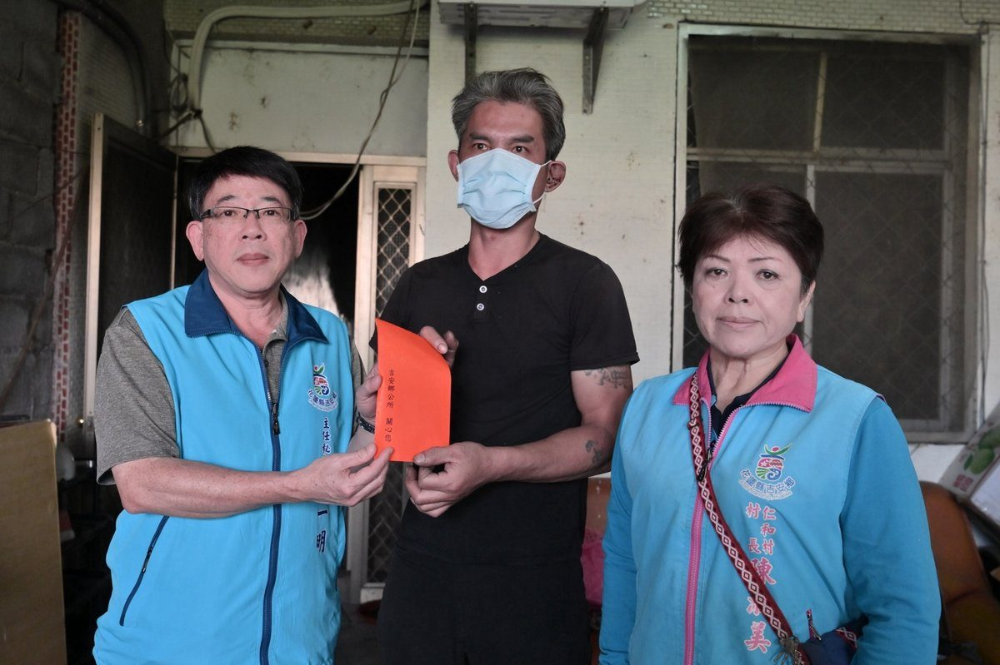

吉安連兩起火警 游淑貞慰問受災戶籲防火

可樂電子報小編/編輯
吉安鄉近日接連發生兩起民宅火警，鄉長游淑貞獲悉後，第一時間即啟動公所關懷機制，指派民政課專人前往現場瞭解受災情形及需求，提供即時協助。今（26）日上午，公所團隊並會同吉安鄉民代表會主席邱美雲及在地村長等人到宅關懷慰問，表達對受災民眾的關心，也提醒鄉親提高居家防火意識，共同防範火災事故發生。

首起火警於23日凌晨發生在仁和村的民宅，起火範圍為室內約4坪大的房間，消防人員獲報後迅速到場灑水搶救，及時控制火勢。此次火災造成房內彈簧床、衣櫥及衣物等物品受損，所幸盧姓房客及時逃出火場無人傷亡。詳細起火原因及財物損失，仍待消防單位火災調查科進一步鑑定。

另一起火警則於24日接近中午時分，發生在仁安村一處貨櫃鐵皮屋。屋內客廳、臥室及兩間小型辦公室均受到火勢波及，造成電視機、冷氣、監視器及電話等設備受損。消防人員接獲通報後迅速到場灑水搶救，順利完成滅火及後續處置，郭姓屋主與家人皆平安，實際起火原因與損失情形，將由消防單位進一步調查鑑定。

主任秘書樊一明帶領社會課相關人員實地訪視，除代表公所分別致贈關懷慰問金，也主動瞭解受災戶災後生活情形，並表示若後續有生活或其他協助需求，可隨時與公所聯繫或就近向村鄰長反映，鄉公所是鄉親們堅實後盾，隨時樂於給予支持力量。

游淑貞鄉長也特別強調敦親睦鄰、守望相助的重要性。仁和村此次火警中，幸有熱心鄰居因本週六選舉投票，提早從外縣市返鄉，當晚發現盧姓租戶住處冒出黑煙，立即通報消防單位，並主動通知附近鄰居、協助逃出戶外，及時發揮通報與互助功能，充分展現鄰里間守望相助的精神。
吉安鄉公所提醒，居家用火及使用易燃物品務必提高警覺，切勿在易燃物附近吸菸，酒精等易燃液體應妥善存放，並遠離火源及高溫環境；平時也應定期檢查電器與電線，避免因線路老舊、電器過載或長時間使用而引發危險。若不慎發生火災，應立即撤離至安全區域並撥打119求助。公所呼籲鄉親共同落實居家防火措施，守護自己與家人的生命財產安全。
📸 更多現場紀實影像


🌟 掌握花蓮在地第一手資訊・歡迎訂閱追蹤
深度紀實報導、在地精采影音專題，第一時間接收最新消息！